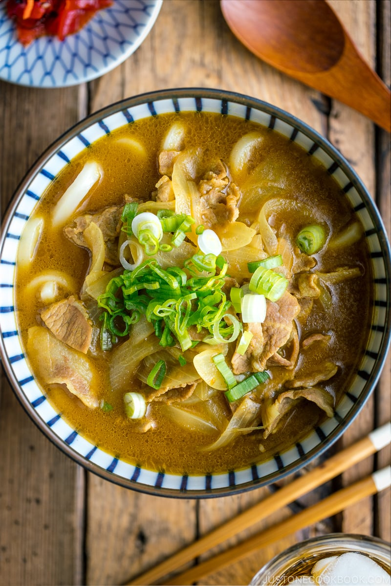

Back To Home
Curry Udon

A warming Curry Udon recipe from JustOneCookbook
Ingredients:
- 1/2 Onion
- 2 Scallions
- 1 Tbsp Neutral Oil
- 170g thinly sliced Pork Loin
- 1 Tbsp Sake
- 720 ml Dashi
- 2 cubes Japanese Curry Roux
- 2 tsp Soy Sauce
- 2 servings Udon Noodles
Steps
- Gather all the ingredients. Break the boxed roux into cubes and use 2 cubes Japanese curry roux
(keep the leftovers in an airtight container and store in the refrigerator/freezer for 1-3 months).
Prepare 720 ml dashi (Japanese soup stock) using your preferred method.
- Thinly slice ½ onion and 2 green onions/scallions. Set aside the green onions for garnish.
- Preheat a medium pot or Dutch oven (I used a 2.75 QT Staub) over medium heat. When the pot is hot, add 1 Tbsp neutral oil.
Next, add the onion slices.
- Sauté the onion slices for 2-3 minutes. Then, add 170 g thinly sliced pork loin that you have cut into bite-sized pieces.
- Cook the meat until it is barely pink. Next, add 1 Tbsp sake.
- Add the dashi to the pot and cover with the lid. Reduce the heat to medium low and cook for 5 minutes.
- When simmering, skim off the scum and fat from the stock with a fine-mesh skimmer and continue to cook. Meanwhile, start boiling a large pot of water for the udon.
- After 5 minutes of simmering the stock and meat, turn off the heat. Next, put a cube of curry roux in a ladleful of hot stock.
- With chopsticks or a spoon, dissolve the roux cube completely in the ladle, then release it to the soup. Repeat with the next cube.
- Add 2 tsp soy sauce and mix well. Turn off the heat and cover with the lid to keep it warm.
- When the water is boiling, cook 2 servings udon noodles according to the package instructions.
- Drain the noodles and divide into two bowls. Pour the curry soup over the udon noodles. Top with the green onions and serve immediately.